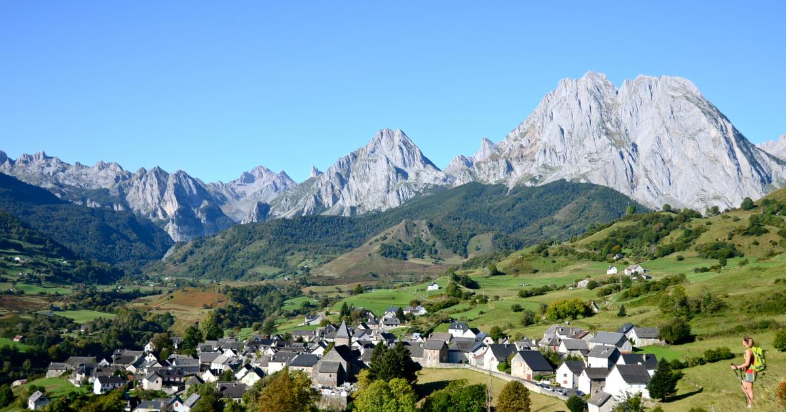
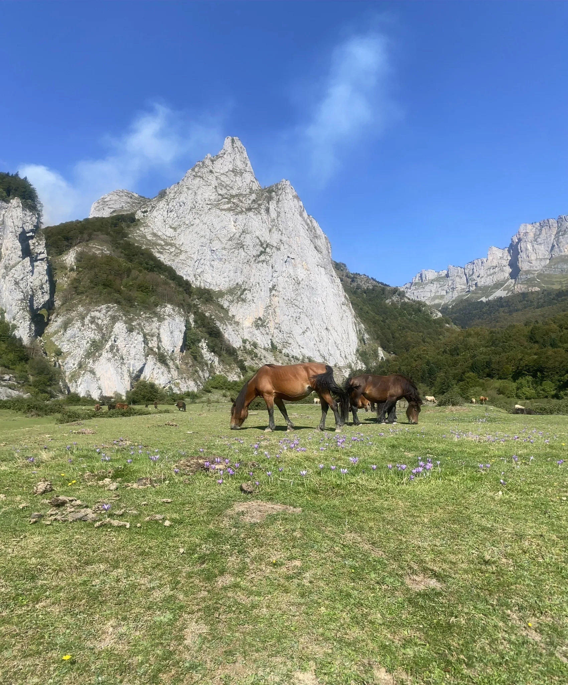
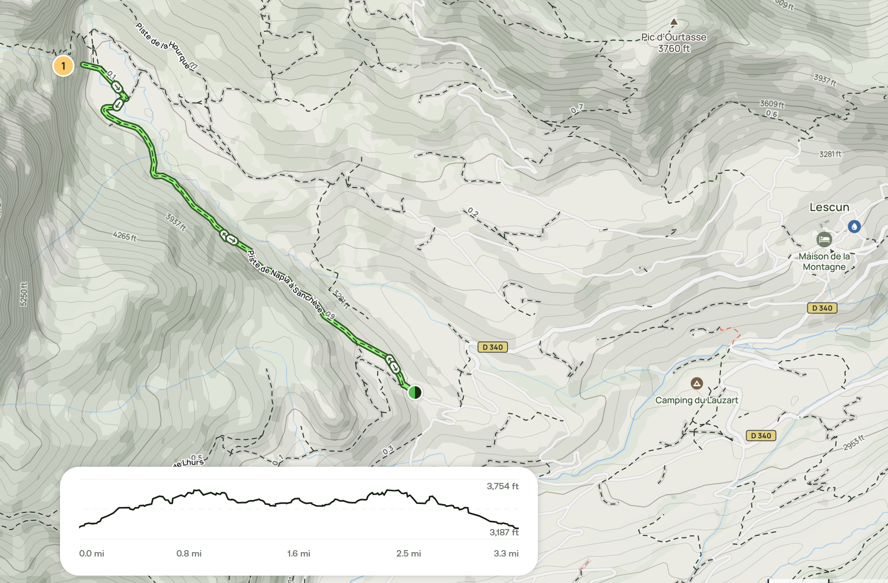
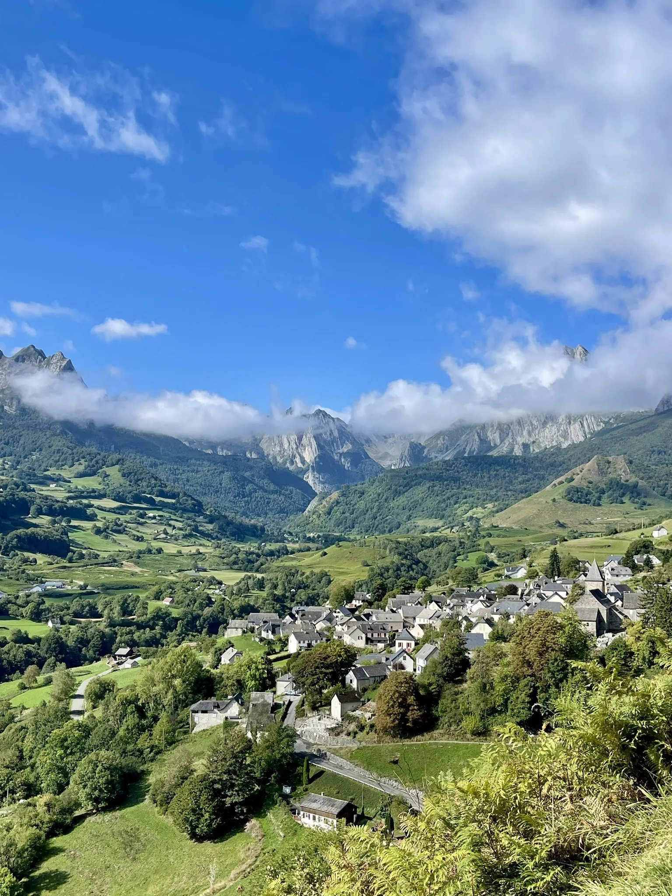
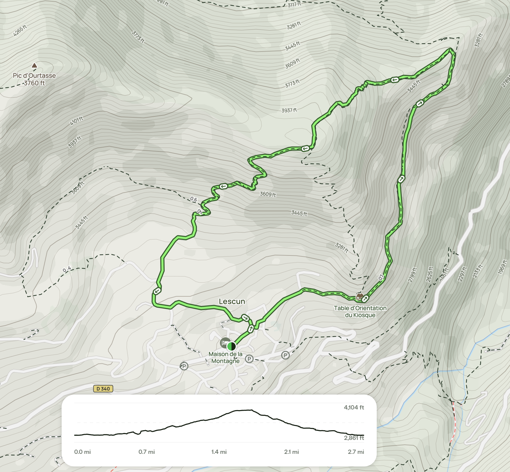
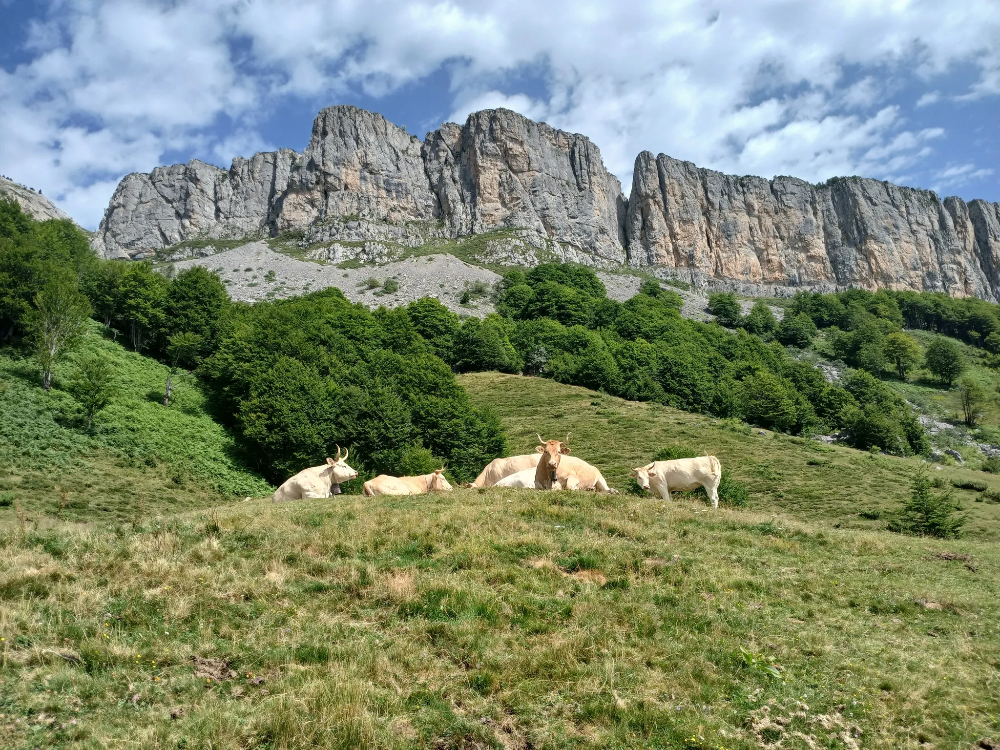
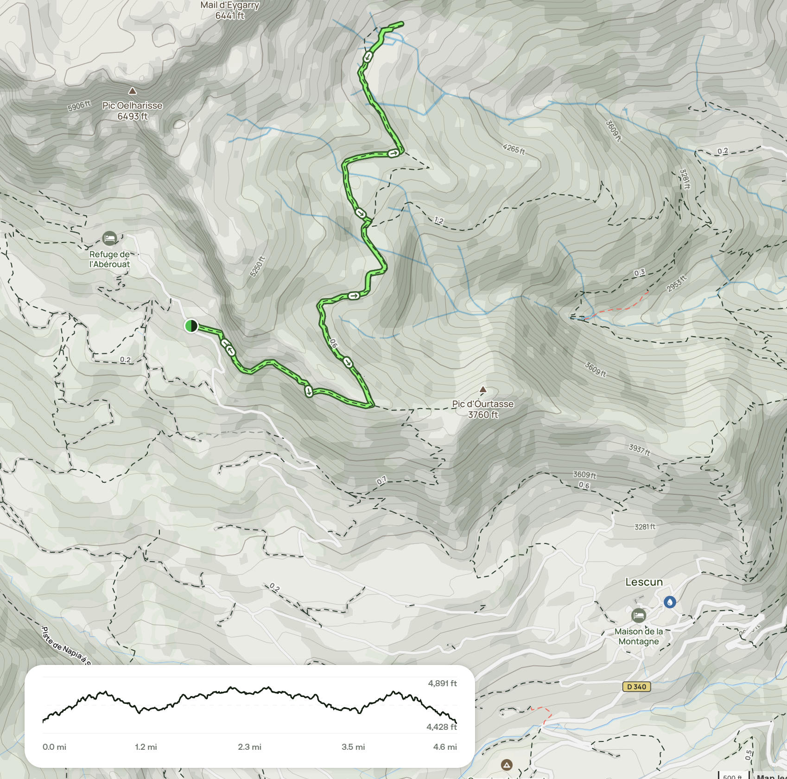

×

Mountain weather changes fast — clear mornings can turn to afternoon showers. Rain gear is essential, not optional. Snow possible above 1,800m. Check Météo France each morning. Bad forecast = rest day at the Airbnb.
Long days but mountains block direct sun earlier — expect shade on east-facing slopes by 7 PM. Morning light on the Cirque de Lescun is spectacular.
Layering formula: Base layer + fleece + rain shell. Mornings start cold (low 40s), sun warms fast, then clouds can roll in. Pack for the full 43–68°F range. Warm hat and gloves not overkill for 6 AM mountain air.
First full day in the mountains. Pick a hike from the options below based on weather and energy. One good walk, then rest. Let the mountains do the work.
Wake up to mountain air. Espresso from the machine at La Bourdette. The south-facing terrace has mountain views — this is peak quality of life. Pick a hike (see below) and head out early when conditions are best.
Lucy nap. Your nap. Sit on the south-facing terrace. Watch the clouds move across the peaks. Cook lunch in the fully-equipped kitchen. This is the point of going to a mountain village — the stillness.
Dinner at La Bourdette. Fire up the BBQ grill if the weather holds, or cook inside — gas stove, double oven. Mountain food: hearty soups, cheese, bread, wine.
Last day of true mountain quiet. Tomorrow you drive to San Sebastián. One more walk if the weather cooperates, then recovery mode.
Try a different hike from the options below, or revisit yesterday’s route — the light will be different. Or simply walk through Lescun village and the fields. No summit goals.
Lunch. Do a load of laundry (washer in unit, no dryer — use drying rack). Start packing. Fill the gas tank if needed — no gas stations in Lescun, use Oloron or Bedous. Last afternoon on the terrace.
Last mountain dinner. Open the last bottle of Saint-Émilion wine. BBQ on the terrace if the weather holds. Watch the sun set on the cirque.
Pick based on weather, energy, and Lucy’s mood. All start from or near Lescun village. The out-and-back trails can be cut short at any point — just turn around when you’re ready.
Flat plateau with a waterfall at the end. Trail crosses a stream ford and follows the valley floor — relatively gentle for the area. The plateau is ringed by cliffs and forest. Good picnic spot near the falls. You’ll likely see sheep and cows grazing up here.


Short, but quite steep loop starting from the village. Climbs a balcony path along the hillside, then cuts through the Bois de Barlatte beech forest. Good views of the Anie massif and surrounding peaks from the high point. Descent comes back through ferns and open meadows.


Easy, well-marked route (yellow blazes) to the Cabane de la Boué on a plateau below the Mail d’Eygarry. The trail begins from a higher point above Lescun, so the overall gradient stays moderate as it climbs gradually through shaded beech and fir forest. The path can become muddy after rain, making it less ideal in wet conditions. Although roughly three-quarters of the route is forested, the views at the start and from the cabin are excellent, with clear sightlines toward Le Billare and the broader Cirque de Lescun on the return. The cabin itself sits in a flat, open clearing and makes a good place to pause.


General trail notes: Mid-May trails may be muddy or have residual snow above 1,200m. Stick to lower elevations. Check conditions at the Lescun mairie (town hall) or ask locals. Trail runners or light hiking boots recommended — not city sneakers. Carrier only (no stroller). Bring rain gear, extra layers, snacks, and water. Turn back if weather shifts or Lucy is unhappy.
From Saint-Émilion (~3.5 hrs): A65 south to Pau, then D-roads into the Aspe Valley. The last 30 minutes are on narrow mountain roads — beautiful but slow. Not stressful, just scenic.
To San Sebastián (~2.5 hrs): Descend to Oloron, then either cross via the Col du Somport (mountain pass, beautiful, slower) or take the A64/E80 west and cross at the coast near Irún. Google Maps will route you — download offline maps for the Pyrenees as cell coverage is spotty.
Prepared March 2026. Verify trail conditions, weather, and road access before heading out.
Bonne randonnée. 🏔️